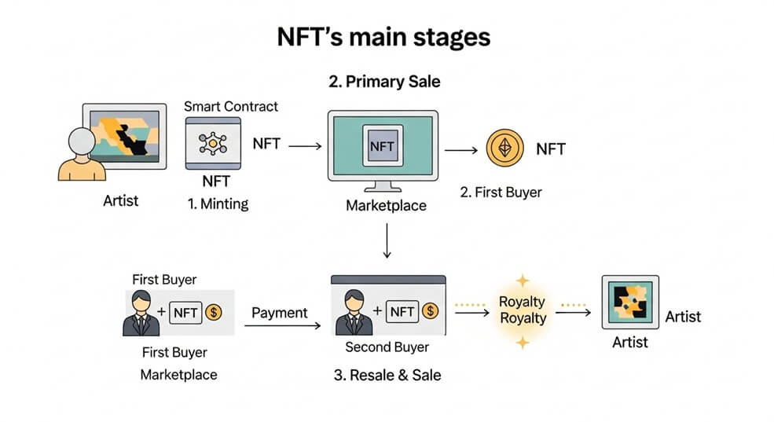
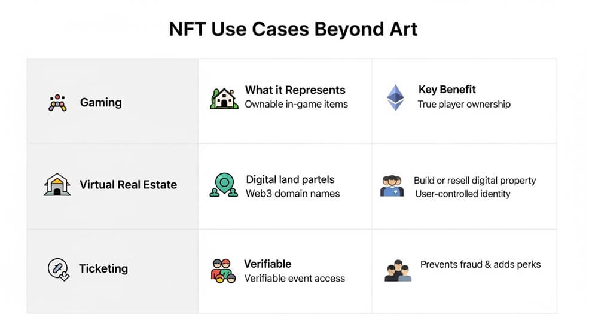
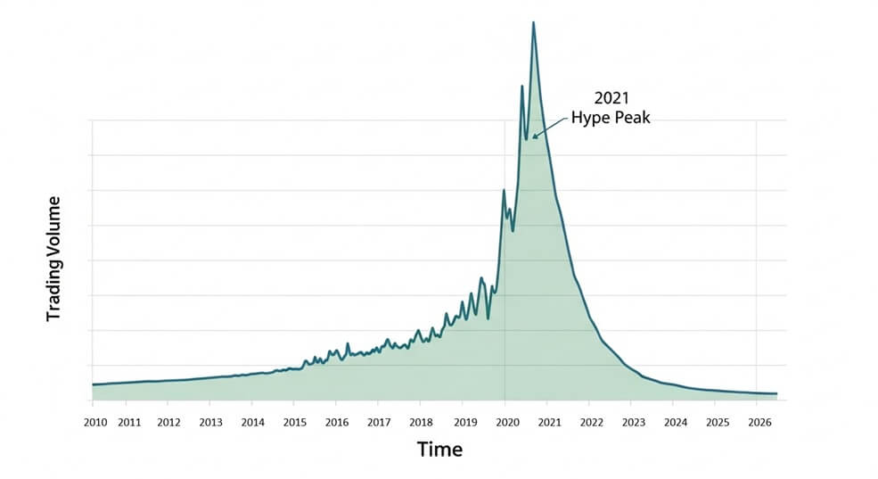

Key Takeaways
- Digital certificate of ownership: An NFT is a one-of-a-kind crypto token that proves who owns a specific digital (or physical) item.
- Proof via blockchain: The NFT’s unique ID and transaction history live on a public blockchain, making authenticity and ownership easy for anyone to verify.
- More than art: NFTs can represent in-game items, virtual land, domain names, event tickets, real-world collectibles, and more.
- New opportunities & new risks: NFTs enable creator royalties and novel forms of digital property, but they also involve speculation, scams, and copyright confusion.
What Is an NFT?
A non-fungible token (NFT) is a unique digital asset recorded on a blockchain. Unlike a dollar bill or a bitcoin (both fungible, i.e. interchangeable), each NFT has its own ID and cannot be swapped 1-for-1 with any other token.
Think of an NFT as a digital certificate of authenticity. The blockchain stores the token’s unique ID and ownership history, while the media it represents (image, video, document) is usually stored off-chain and linked by the token’s metadata.
Analogy: If a JPEG file is like a photograph anyone can copy, the NFT is the artist-signed, numbered print that proves which copy is the original.
Use Cases of NFTs Beyond Art
Here are several areas where NFTs add value:
Gaming Items
Characters, skins, and weapons can be NFTs that players truly own and trade outside a game’s marketplace.
Virtual Real Estate
Platforms like Decentraland sell land parcels as NFTs, allowing owners to build, rent, or resell digital property.
Domain Names & Identity
Services such as Ethereum Name Service (ENS) package readable
.eth names as NFTs, giving users full control over their Web3
identities.
Tokenized Real-World Assets
NFTs can act as digital deeds for physical items—fractional shares of real estate, luxury goods, or even academic diplomas.
Event Tickets & Loyalty
Concerts and conferences experiment with NFT tickets that fight fraud and can include perks or collectibles for attendees.
Hype, Challenges, and the Future
The 2021 NFT boom saw eye-popping sales and celebrity endorsements, but prices fell sharply as speculation cooled. Today, developers focus on practical utility—royalties that pay artists on every resale, NFTs as membership passes, and integration with DeFi (using NFTs as loan collateral).
Key challenges remain: energy use (though proof-of-stake chains help), buyer confusion about copyright, and the need for better consumer protection. Whether NFTs become everyday “digital property titles” or stay niche collectibles will depend on solving these issues.
Risks & Important Considerations
- Speculation and value swings: NFT prices can rise or crash rapidly; many have become nearly worthless after hype faded.
- Ownership vs. copyright: Buying an NFT rarely grants you copyright to the artwork—only the token itself.
- Liquidity limits: Each NFT is unique, so finding a buyer can be slow or impossible if demand drops.
- Fraud and scams: Fake collections, phishing sites, and “rug pulls” are common; always verify creators and use reputable marketplaces.
- Irreversible transactions: Blockchain transfers cannot be undone, and lost wallet keys usually mean permanent loss.
- Environmental and legal questions: Some networks still use energy-intensive consensus, and regulations on NFTs are evolving.
The following links are provided for educational and informational purposes only. Literacy & Innovation in Financial Technology Alliance (LIFT) does not endorse any of the organizations, products, services, or opinions presented on these external sites. LIFT is not responsible for the accuracy or content of external sites. We encourage you to conduct your own research.
Further Reading & Sources
Disclaimer: This article is for educational purposes only and does not constitute financial advice.